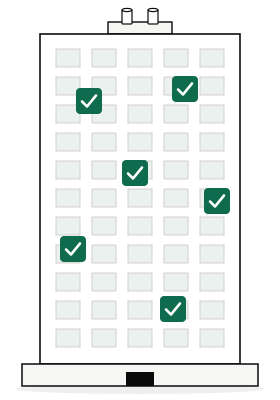

The AI team your firm doesn't need to build.
Point-in-time audits. Scheduled maintenance. Quarterly reports. Your clients stopped buying them. They want continuous monitoring, verification, and close-out. RCx, MBCx, BMS, or mechanical: the service model just moved under you.
PEAK is the fully-managed Building Performance Automation platform services firms cross the line with. Your engineers log on to live deployments instead of integration projects.
Your clients are no longer buying audits. They're buying outcomes: continuous savings, proven fault close-out, auditable ESG performance. The service model has moved.
Commissioning is becoming continuous, monitoring-based commissioning on multi-year retainers.
Calendar-driven checks are becoming continuous, automated verification, closing the assurance gap no technician roster can physically deliver.
Quarterly PDFs are becoming dashboards your clients check daily.
Every RCx/MBCx firm, engineering consultancy, and BMS/mechanical contractor has to cross this line. You either hire a software team and spend a decade building it, or partner with one already on the other side.
Building the platform a modern MBCx contract demands is a multi-year software job. It requires, minimum:
That's the gap any firm building alone has to close.
CIM operates the hosting, the onboarding, the tagging, and 24/5 local engineering support. Your firm operates the client relationship, the retainer, and the outcomes.
We built PEAK for our own engineers running global portfolios across hundreds of millions of square feet, then opened it to partners as a fully-managed service. You keep the client relationship, the margin, and the renewal.
Our team connects to the BMS, discovers the point list, and stands up a working FDD deployment inside a week.
Proprietary model auto-tags points across manufacturers and protocols. No six-month tagging project.
Rules library refined across hundreds of millions of square feet of deployed assets globally, running billions of automated real-time checks. Every fault pattern in your new asset is already known from the buildings we run.
Your engineers and clients interrogate PEAK through AI tools they already use — ChatGPT, Claude, or Microsoft Copilot.
Triages faults, assigns ownership, chases close-out, and drives the completion rates MBCx retainers live or die on. Early partner deployments running today.
Resolves faults programmatically by tuning setpoints, schedules, and sequences from the cloud. No truck roll required.
Your best engineer services 5 large sites today. 50 with PEAK. Your firm scales capacity without scaling headcount. That is the partnership.
Proven running our own global portfolios, across hundreds of millions of square feet under continuous monitoring.
We share the number on a partner fit call. The economics depend on the deployment model, and the deployment model depends on your portfolio shape.
Book a partner fit call →Partner retains everything above wholesale, plus all services revenue: deployment engineering, MBCx program delivery, fault triage, client reporting, retainers.
*Separate labor line, billed at cost. Tech-enabled, so a fraction of what in-house delivery would cost you.
PEAK is deployed through partners. If you recognize yourself below, we want to talk.
The audience PEAK is built for. Scale past the hero-engineer ceiling without hiring another one.
Convert one-off audits into recurring MBCx retainers your clients renew.
A continuous assurance layer, sold as a recurring service on top of your existing dispatch business.
A mid-rise office portfolio requires 1,000+ verification hours per building per year under recognized maintenance standards. Most dispatch teams can physically deliver less than a third of that. The result is a 72% assurance gap your clients are carrying whether they name it or not.
Under recognized maintenance standards, a 200,000 sqft mid-rise office requires more than a thousand annual verification hours across BMS and mechanical systems. Most dispatch rosters can physically deliver less than a third of it. The rest is carried as an assurance gap — invisible on the schedule, real in the building.

Continuous AFDD runs 24×7 across every point in the portfolio, absorbing the bulk of routine verification your roster was never going to get to. The gap doesn't disappear — it narrows to a residual your team can actually see and work.
Modeled on a 200,000 sqft office under recognized maintenance standards. Shape holds across asset class; magnitudes vary.
Billions of real-time checks per portfolio per year, running continuously. No technicians replaced — the ceiling that used to cap a dispatch roster is the floor PEAK starts from.
Apply to the partner program, or book a partner fit call to see the deployment model and wholesale economics.